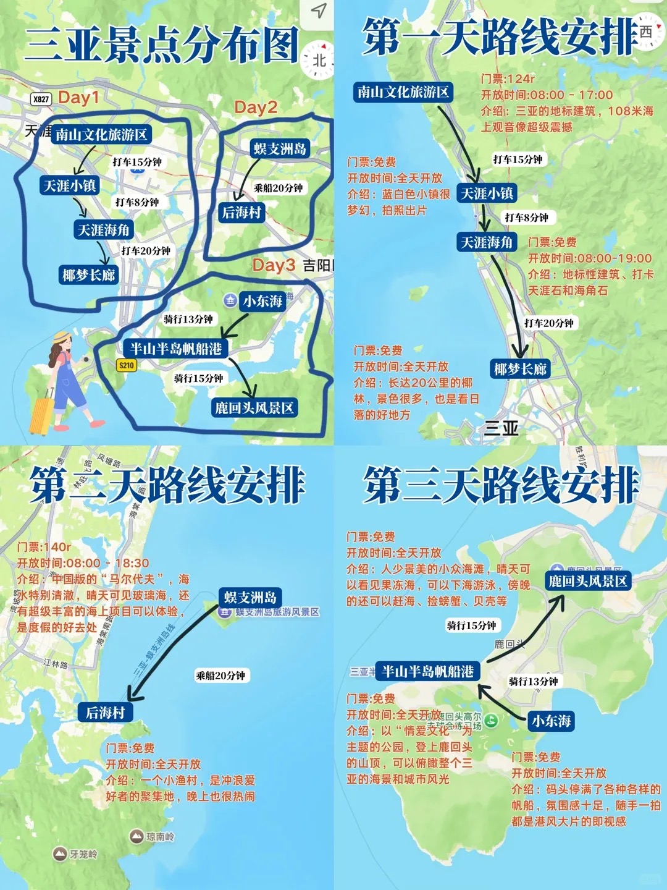
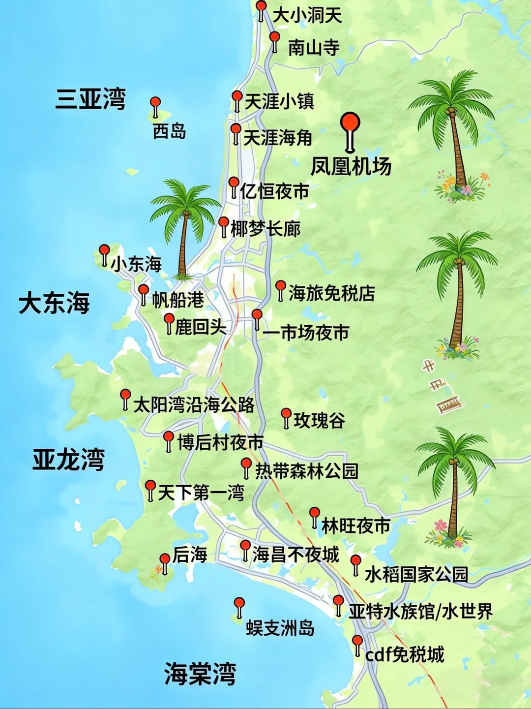

六月关键词
高温、高湿、强紫外线，午后可能雷阵雨。把户外强度集中在 10:30 前和 16:00 后。
 qwrazdf
qwrazdf
2026.06.02 晚到三亚 / 合肥出发
三亚住椰梦长廊 3 晚：西岛负责海岛和赶海氛围，亚龙湾/太阳湾负责好海好沙滩，天涯小镇、半山半岛和鹿回头负责拍照收尾；香水化妆品优先放海口日月广场或机场免税店。
高温、高湿、强紫外线，午后可能雷阵雨。把户外强度集中在 10:30 前和 16:00 后。
三亚住椰梦长廊：离海近、机场近、去三亚站不绕，吃饭也比海棠湾方便；真正好看的海放到西岛和亚龙湾补足。
6 月 5 日晚上去海口，优先看三亚站到海口东或美兰站；免税购物放到海口更顺，三亚 cdf 只在走蜈支洲/海棠湾时顺路加。
Map Logic
按你的新版来：西岛和亚龙湾是主菜，免税不单独跑远路，三亚第三晚转海口。

assets/sanya-3day-route.jpg 后会自动显示。
assets/sanya-overview-map.jpg 后会自动显示。6/2 晚：凤凰机场 → 椰梦长廊酒店。三晚不换住处，近海、近机场。
西岛渔村 → 牛王岭/乌龟滩 → 轻度赶海 → 椰梦长廊日落。
亚龙湾/太阳湾 → 亚龙湾公共海滩；海棠湾 cdf 只作为可选。
天涯小镇或南山二选一 → 半山半岛帆船港 → 鹿回头 → 海口。
优势是离海近、看日落方便、机场和三亚站都不远，吃海鲜和夜市比海棠湾省心。
更顺路、更控费，适合拍照、渔村、牛王岭、礁石海岸和轻度赶海氛围。
想要潜水、摩托艇等更强水上项目时再替换西岛，并顺路考虑海棠湾 cdf。
香化优先日月广场，时间充裕再去海口国际免税城；美兰机场适合最后补货。
合肥出发，晚到三亚，住椰梦长廊。
西岛渔村、牛王岭、乌龟滩、轻度赶海氛围，晚上椰梦长廊日落和海鲜。
森林公园或太阳湾公路，下午亚龙湾公共海滩；海棠湾 cdf 仅作为可选。
天涯小镇或南山二选一，半山半岛、鹿回头，晚上动车去海口，住海口。
上午骑楼老街 + 老爸茶，下午日月广场免税店，傍晚海口湾骑行或云洞图书馆看落日。
自然醒早午餐，中午退房寄行李，下午美兰机场免税补货，15:00 前到机场，17:15 起飞回合肥。
Beach Mood
把热的时间留给泳池、空调和午睡，把好看的时间留给海边。
椰梦长廊离海近、日落好、价格相对友好，机场和三亚站都比住海棠湾省路。
渔村、白墙小路、牛王岭、乌龟滩和礁石海岸更贴近拍照与轻度假，路程也顺。
三亚湾负责日落，亚龙湾和太阳湾负责蓝海、沙滩、比基尼和更好看的海岸线。
三亚 cdf 只在走海棠湾东线时顺路加；主购物放海口日月广场，返程机场补缺。
Route
默认按 2026 年 6 月 2 日晚上到三亚设计。三亚三晚固定住椰梦长廊，西岛和亚龙湾优先，免税购物不单独为了海棠湾折返，6 月 5 日晚上转海口。
Choices

西岛补海岛体验，亚龙湾补清澈海水，椰梦长廊负责住处便利和日落。

比单纯逛景区更有城市生活味，适合安排在下午到晚上。

南山、蜈支洲和海棠湾 cdf 都占时间，只按兴趣替换，不和主线全塞。
Food
海鲜留给三亚，市井小吃留给海口。这样既满足“海边吃海鲜”，也不会每天都被大餐拖累。
Budget
Prep
六月海南的体验差距，往往不在景点，而在有没有把太阳、潮汐和转场安排好。
SPF50+ PA++++ 防晒霜、遮阳帽、墨镜、防晒衣、冰袖、晒后修复；下水后 80 分钟补涂。
比基尼适合海边拍照和泳池，外搭长袖防晒衫更实用；带防水手机袋和替换干衣。
只在低潮前后去，穿涉水鞋，不徒手碰水母和不认识的海洋生物；“抓水母”改成观察拍照更安全。
海口湾傍晚骑行更舒服；三亚电动车只建议短距离，避开中午和不熟悉的快车道。
Notes
朋友可以先把想法写在这里，内容会保存在自己的浏览器里。想真正发给你，就用右侧按钮提交到 GitHub Issue。
本地自动保存，不会公开显示给其他人。
References
出发前 24-48 小时复核天气、航班、动车、景区预约和潮汐。小红书公开内容常有登录限制，页面保留站内搜索入口，便于你临行前看最新笔记。